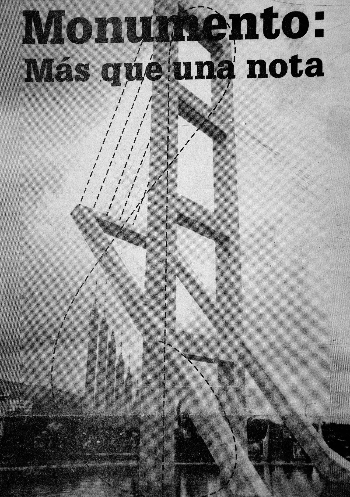

Una ruta por los monumentos musicales del centro de la ciudad
Te invitamos a realizar este recorrido por la ciudad de Ibagué, donde tendrás la oportunidad de visitar los principales monumentos dedicados a la música ibaguereña.
Puedes empezar por el icónico Parque de la Música, donde encontrarás estatuas de personajes interpretando diversos instrumentos musicales. Además, a pocos pasos se encuentra el Conservatorio del Tolima, monumento nacional e insignia de la educación musical en la ciudad y en el país. Muy cerca también está el emblemático Salón de Conciertos Alberto Castilla, nombrado en honor a uno de los más importantes promotores de la música en la región.
Si continúas por la carrera tercera, llegarás al Teatro Tolima, inaugurado en 1940, un escenario donde miles de tolimenses han disfrutado de la música local y nacional.
Al dirigirte hacia la carrera quinta, encontrarás la Plazoleta de los Artesanos, donde se destaca la escultura de la clave de sol. Justo detrás se ubica la Concha Acústica, construida en [año], un espacio tradicional donde antiguamente se realizaban presentaciones folclóricas.
Finalmente, puedes terminar este recorrido por el centro de la ciudad en el Museo Panóptico, un lugar que actualmente alberga presentaciones musicales y de danza.
¡Ven y disfruta de la riqueza cultural y musical de Ibagué!
Los monumentos y su lugar en la memoria
Reflexionemos sobre el papel de los monumentos en la construcción y establecimientos de ciertos imaginarios
Los monumentos son formas de pedagogía de la memoria que sirven para darle representatividad y materialidad a un recuerdo concreto. Son construidos con una voluntad en mente que se quiso que perdurara. No son automáticos ni productos del azar, sino de la voluntad humana. Cada monumento, escultura y busto tiene un sinfín de decisiones de memoria que determinan el cómo y la forma en que se le da representatitividad a una memoria.
Los monumentos son llamados por Pierre Nora como "lugares de memoria", que se entienden como marcas en el espacio público creadas por un grupo determinado y que tienen como objetivo mantener y visibilizar un recuerdo colectivo.
Lo anterior es importante porque nos permite reflexionar sobre el rol de los monumentos en la construcción de una imagen de Ibagué como la ciudad Musical de Colombia.
Nos invita a pensar a los ibaguereños, tolimenses, colombianos y extranjeros sobre la Ibagué imaginada. Pensar en el proceso, los logros y la lógica bajo la que se fue desarrollando e impactando en el espacio público de la capital tolimense.
Esperamos que este sitio web sea ese granito que necesitan para iniciar su reflexión.

Fuente: El Nuevo Día. 24 de Octubre de 1995